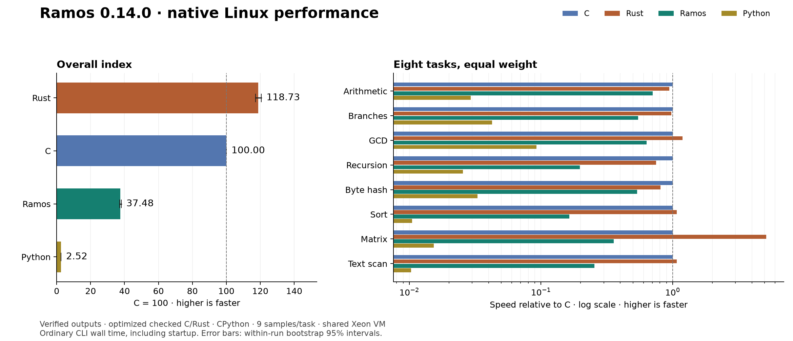

Performance and evidence
This 0.19.1 edition retains measured 0.14 cross-language results below. They are historical; no C/Rust/Python comparison or overall language score for 0.19.1 is claimed. Historical focused 0.17 text-assembly measurements follow. 0.18 numerical tests prove results, not a comparative speed measurement.
These are recorded Ramos 0.14.0 measurements, including exact outputs, source/compiler hashes, flags and raw samples. The shared VM and selected workloads limit the conclusions. This is an execution index, not a score for language quality or all possible applications.
Existing benchmark binaries are unchanged from 0.13 on both targets; the syntax milestone makes no general speedup claim. See the syntax and targeted range-loop evidence.
Measured 2026-10-10T15:31:11.038801+00:00 on x86-64 Linux. Higher scores are faster; optimized C = 100.
| Language | Overall execution index | Within-run bootstrap 95% interval |
|---|---|---|
| Rust | 118.73 | 117.28–120.64 |
| C | 100.00 | 100.00–100.00 |
| Ramos | 37.48 | 37.15–38.04 |
| Python | 2.52 | 2.48–2.56 |
Across these tasks, Ramos is 14.88× faster than Python, and takes 2.67× the time of C and 3.17× the time of Rust (geometric means of per-task median ratios).
Per-task execution time
Median wall time in milliseconds for the same work and seed. Includes process creation, loading, argument parsing, allocation, computation and one checked output line.
| Task | Work count | Ramos | C | Rust | Python | Ramos vs Python |
|---|---|---|---|---|---|---|
| Serial integer arithmetic / modulo | 6,461,457 | 43.235 | 30.518 | 32.261 | 1041.265 | 24.08× |
| Data-dependent branches | 2,705,679 | 55.157 | 30.245 | 30.863 | 711.833 | 12.91× |
| Euclidean GCD | 578,275 | 62.141 | 39.421 | 33.236 | 426.748 | 6.87× |
| Runtime-seeded recursive tree | 1,331 | 171.641 | 33.848 | 45.078 | 1325.871 | 7.72× |
| Rolling byte-buffer hash | 6,756,674 | 57.241 | 30.818 | 38.119 | 935.095 | 16.34× |
| Insertion sort of 128 bytes | 11,314 | 240.879 | 39.619 | 36.840 | 3768.158 | 15.64× |
| 16×16 byte matrix multiplication | 25,629 | 538.549 | 192.224 | 37.479 | 12506.292 | 23.22× |
| Scan 16 KiB ASCII text | 2,196 | 144.917 | 36.874 | 34.388 | 3567.756 | 24.62× |
Score definition
Index(language) = 100 × geometric_mean(C_median(task) / language_median(task))
All eight tasks have equal weight. The suite measures execution of ordinary programs, not patched code, an in-process kernel, compilation throughput or a universal language score. Startup is included in task timings but its separate probe is excluded from the index. The 95% intervals resample the collected timing samples; they do not capture uncertainty from different machines, task selection or operating systems.
Tasks and correctness
- LCG: serial multiply/add/modulo recurrence with runtime seed.
- Branches: runtime-generated parity and divisibility branches with checksum.
- GCD: Euclidean remainder loops on varying positive inputs.
- Recursion: traverse a depth-12 binary tree with runtime-dependent child values and leaf checksum.
- Byte hash: visit a 4 KiB buffer and update a bounded polynomial hash.
- Insertion sort: refill and sort 128 bytes; checksum weights sorted positions.
- Matrix: multiply two 16×16 byte matrices, writing one input cell per pass, reduce output cells modulo 256, then checksum weighted positions.
- Text scan: classify digits, uppercase ASCII and spaces in 16 KiB; write one byte per pass.
Programs use the same algorithms, sizes, deterministic data and work count in all four languages. Work counts and seeds come from command-line arguments, so answers are not compile-time constants. All 32 task implementations pass independent reference checks at counts 0, 1 and 7 with seeds 1, 17 and 123. Full-size outputs are checked against references on every warmup and timed execution. Native compilers can optimize code normally; recursive calls may be transformed or inlined.
Measurement method
- 9 timed samples per task/language; randomized language order within each round, sequential execution, two verified warmups.
- Work counts calibrated until both C and Rust took at least about 30 ms in the calibration probes. The same count is then held fixed for all languages.
- Work counts are reused from the supplied baseline without recalibration.
- Pinned to logical CPU 0; Python
perf_counter_nswall clock. - Shared virtual machine; CPU frequency, other tenants and background activity are not controlled. Warm filesystem caches; no Windows performance claim.
- CPython executes source scripts normally, including parsing on every launch. C/Rust/Ramos binaries are built before execution timing.
- GCC:
-O3 -std=c11, with checked add/subtract/multiply builtins and explicit byte bounds. - Rust:
-C opt-level=3 -C overflow-checks=yes -C panic=abort; safe byte indexing/conversion. - Ramos: default native backend (release instruction selection described in the repository); arithmetic, buffer and call-depth checks retained. Python integers stay within signed 64-bit range for these inputs. C/Rust can eliminate provably redundant checks; Python has no Ramos-style call-depth or byte arena limit. Limits are not reached by the suite.
Raw nanosecond samples, p10/p90, calibration probes, build commands, source hashes and compiler/environment versions are retained in results.json.
Startup probe (excluded from index)
Argument parsing and printing a supplied integer; median over 51 randomized launches.
| Ramos | C | Rust | Python |
|---|---|---|---|
| 1.333 ms | 1.066 ms | 1.333 ms | 18.168 ms |
Builds and output size (excluded from index)
Median of three builds per task, including compiler startup and linking/publication. The table shows geometric means across tasks. It is not a general compiler throughput ranking: source sizes differ, and C/Rust use broader optimizers than the local Ramos emitter. Python is run as source and has no native binary in this experiment. Sizes are unstripped compiler outputs with different standard-library/linkage choices.
| Language | Build time | Native binary size | Source size |
|---|---|---|---|
| Ramos | 7.108 ms | 12738 B | 750 B |
| C | 64.558 ms | 16616 B | 1547 B |
| Rust | 168.900 ms | 4506097 B | 925 B |
| Python | — | — | 475 B |
Next work for Ramos
- Profile the largest native gaps before adding an optimization pass: Insertion sort of 128 bytes (6.1× C time), Runtime-seeded recursive tree (5.1× C time), Scan 16 KiB ASCII text (3.9× C time). Version 0.7.1 already reduces buffer-call and stack traffic and specializes constant arithmetic. Further changes need their own measurements.
- Compare each optimizer change against these exact work counts and compiler hashes, with fresh samples, language correctness tests and both self-hosting proofs. See the paired 0.7.0/0.7.1 comparison.
- Measure native Windows separately, then extend the suite with real file-processing programs. Keep syntax small while improving generated code.

Environment
- CPU: Intel(R) Xeon(R) Platinum 8358 CPU @ 2.60GHz
- Platform: Linux-6.17.0-1020-oracle-x86_64-with-glibc2.39
- Ramos 0.14.0 — compiler written in Ramos; Linux and Windows x64
- gcc (Ubuntu 13.3.0-6ubuntu2~24.04.1) 13.3.0
- rustc 1.98.1 (48a229cea 2026-09-01)
- Python 3.12.3
- Ramos executable SHA-256:
84c2eec9cca7bf655a0e78baf000e2e71db4404b844939b14402c158fc3e9d48
Reproduce
From the repository root on x86-64 Linux with GCC, Rust and Python:
make
python3 benchmarks/run_suite.py --work-counts benchmarks/baseline-0.13.0/results.json --output-dir work/reproduced-0.14.0
Use --validate-only for output verification without timings. --work-counts benchmarks/results.json reuses the published work counts; --output-dir keeps results from another machine separate. Workload sources are in fixtures/. This is a custom Ramos suite, not a SPEC benchmark. The geometric mean follows the established ratio aggregation method. See GCC checked arithmetic and Rust code generation settings.
Historical results from a different machine and Ramos 0.2 are preserved in report-0.2.md and results-0.2.json; they are not directly comparable to this suite.
0.17 focused text assembly
At 8192 appends / 512 KiB, medians on the recorded Linux machine were 287 ms for repeated string concatenation versus 13.8 ms for the reusable text builder (about 20.8×). One warmup and five alternating-order samples include startup and complete content verification. This is a single application workload on a shared container, not a general speedup or native Windows timing.
Raw samples and machine/hash evidence. See text-builder APIs and reproducible measurement.